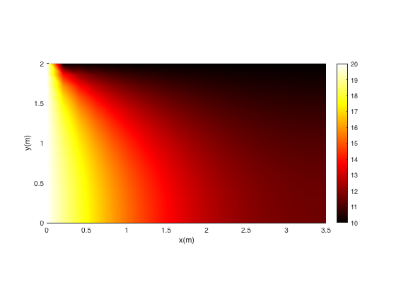
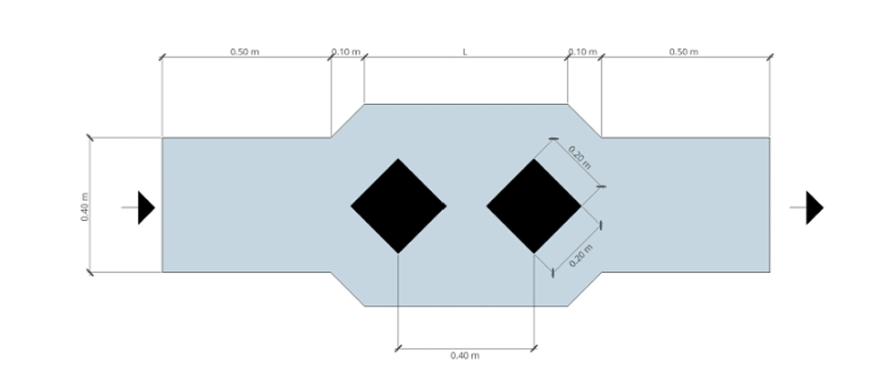
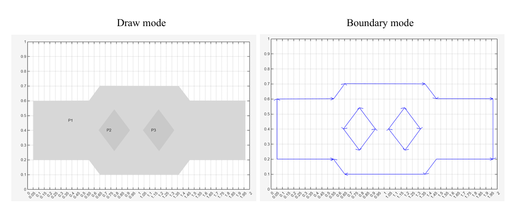
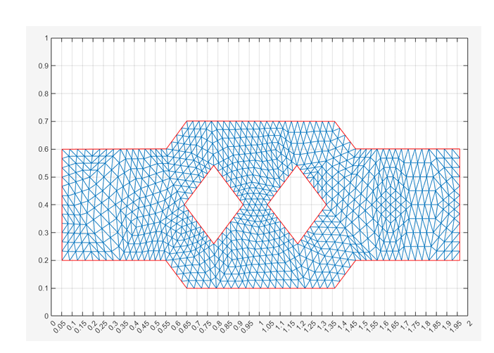
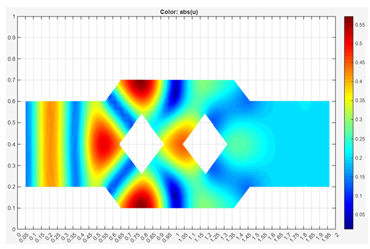
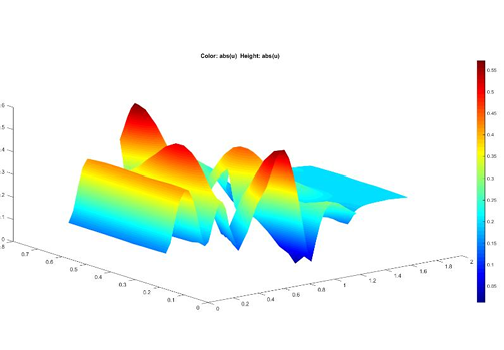

Problems Covered
1D Steady-State
Variable conductivity \(\lambda(x)=0.5+2x\). Dirichlet left, Neumann right. FD matrix system.
1D Transient
Explicit Euler time marching. CFL stability. Temperature evolution at right boundary.
2D Steady-State
3.5 × 2.0 m domain. Known temperatures on left/top, zero flux on right/bottom. Flux vectors via central differences.
Helmholtz 1D & 2D
Frequency-domain acoustic pressure. 1D analytical comparison. 2D structured FD grid.
2D Attenuator
Helmholtz via MATLAB PDE Modeler. TL and IL computed across octave bands 125–2000 Hz.
1D Heat Conduction
Variable Conductivity with Mixed Boundary Conditions
The steady-state ODE is defined on \(x \in [0,\, 0.5]\,\text{m}\) with variable thermal conductivity:
Boundary Conditions:
| Boundary | Type | Value |
|---|---|---|
| x = 0 | Dirichlet | T = 200 °C |
| x = L | Neumann | q = 10 W/m² |
The Neumann condition at the right boundary is discretised using a backward finite-difference approximation:
% Domain & variable conductivity L = 0.4; npts = 5; dx = L/(npts-1); x = 0:dx:dx*(npts-1); lambda = 0.5 + 2.0*x; A = zeros(npts); B = zeros(npts,1); % Dirichlet: left node A(1,1) = 1; B(1) = temp_left; % Neumann: right node (backward diff.) A(end,end-1:end) = ... -lambda(end)*[-1/dx 1/dx]; B(end) = flux_right; % Internal nodes: second-order FD for ii = 2:npts-1 A(ii,ii-1:ii+1) = ... -lambda(ii)*[1 -2 1]/dx^2; end T = A\B; plot(x,T,'LineWidth',2); xlabel('x (m)'); ylabel('T (°C)'); grid on;
Explicit Time-Marching — CFL Stability Criterion
The parabolic PDE governing transient conduction is discretised using explicit forward Euler in time:
Stability requires the CFL condition:
Parameters: \(\lambda=2\) W/°C·m, \(\rho=200\) kg/m³, \(C_p=1000\) J/kg·°C. Initial condition \(T_0=20\,^{\circ}\text{C}\) throughout. Neumann BC at right: \(q=100\) W/m².
alfa = lambda/rho/Cp; dt = (1/2.5)*dx^2/alfa; % CFL safe Ti0 = T0; % initial condition for itime = 1:nsteps % Internal nodes for ipos = 2:npts-1 Ti1(ipos) = Ti0(ipos) ... + dt*alfa*(Ti0(ipos-1) ... - 2*Ti0(ipos) ... + Ti0(ipos+1))/dx^2; end % Boundary updates Ti1(1) = temp_left; Ti1(end) = flux_right*dx ... /(-lambda) + Ti1(end-1); Ti0 = Ti1; end
2D Steady-State Heat Conduction
3.5 × 2.0 m Domain — Temperature Distribution and Heat Flux Vectors
The governing equation is the 2D Laplace equation with \(\lambda = 0.5\) W/°C·m:
| Boundary | Type | Value |
|---|---|---|
| Left (x = 0) | Dirichlet | T = 20 °C |
| Top (y = Ly) | Dirichlet | T = 10 °C |
| Right (x = Lx) | Neumann | q = 0 W/m² |
| Bottom (y = 0) | Neumann | q = 0 W/m² |
Heat fluxes are computed post-solution using central differences at internal nodes:

for ii = 1:nptx for ij = 1:npty center = (ii-1)*npty + ij; left = center-npty; right = center+npty; up = center+1; down = center-1; if x(center) == 0 % Left boundary — Dirichlet A(center,center) = 1; B(center) = 20; elseif y(center) == Ly % Top boundary — Dirichlet A(center,center) = 1; B(center) = 10; elseif x(center) == Lx % Right boundary — Neumann (backward diff.) A(center,[left center]) = -lambda*[-1 1]/dx; B(center) = 0; elseif y(center) == 0 % Bottom boundary — Neumann (forward diff.) A(center,[center up]) = -lambda*[-1 1]/dy; B(center) = 0; else % Interior nodes — Laplace PDE A(center,[left center right]) = -lambda*[1 -2 1]/dx^2; A(center,[down center up]) = A(center,[down center up]) ... -lambda*[1 -2 1]/dy^2; end end end T = A\B;
Helmholtz Equation — Finite Differences
1D Acoustic Pressure with Analytical Comparison
The frequency-domain Helmholtz equation governs pressure in a 1D acoustic domain of length \(L = 3.5\) m:
| Boundary | Type | Value |
|---|---|---|
| x = 0 | Dirichlet | P = 1 Pa |
| x = L | Neumann | vn = 0 m/s |
The velocity Neumann condition translates to the pressure gradient condition via \(v = -\frac{1}{i\omega\rho}\frac{\partial P}{\partial x}\), discretised with backward differences. The analytical solution is:
c = 343; rho = 1.22; freq = 1000; w = 2*pi*freq; K = w/c; % Dirichlet: left A(1,1) = 1; B(1) = 1; % Neumann: right (velocity BC) A(end,end-1:end) = ... -1/1i/rho/w*[-1/dx 1/dx]; B(end) = 0; % Interior: Helmholtz PDE k1 = 1/dx^2; k2 = -2/dx^2 + K^2; k3 = 1/dx^2; for ii = 2:npts-1 A(ii,ii-1:ii+1) = [k1 k2 k3]; end P = A\B;
2D Acoustic Pressure — 3.5 × 2.0 m Domain
The 2D Helmholtz equation is solved on a 66 × 41 structured point grid (\(\Delta x = \Delta y \approx 0.053\) m):
| Boundary | Type | Value |
|---|---|---|
| Left | Dirichlet | P = 1 Pa |
| Top | Dirichlet | P = 1 Pa |
| Right | Neumann | vn = 0 |
| Bottom | Neumann | vn = 0 |
The complex pressure field is visualised as real, imaginary, and absolute values using trisurf with jet colormap.
[x,y] = meshgrid(0:dx:Lx,0:dy:Ly); x=x(:); y=y(:); for ii=1:nptx for ij=1:npty center=(ii-1)*npty+ij; if x(center)==0 A(center,center)=1; B(center)=1; elseif y(center)==Ly A(center,center)=1; B(center)=1; elseif x(center)==Lx % vel. BC A(center,[left center])=[-1 1]/dx; elseif y(center)==0 A(center,[center up])=[-1 1]/dy; else % PDE A(center,[left center right]) = ... [1 -2 1]/dx^2; A(center,[down center up]) = ... A(center,[down center up]) ... +[1 -2 1]/dy^2; A(center,center) = ... A(center,center)+K^2; end end end P = A\B;
2D Acoustic Attenuator — Helmholtz via FEM
Transmission & Insertion Loss, Octave Bands 125–2000 Hz
The attenuator is modelled using MATLAB's PDE Modeler. The Helmholtz equation is solved on a 2D geometry (Figure C) featuring internal diamond-shaped heterogeneities with frequency-dependent surface absorption:
Excitation frequency: \(f = 500 + A_1{\times}10 + B_1 = 565\) Hz. Normal inlet velocity \(v_n = 1\) mm/s; perfect absorption at outlet.





Mesh refinement was conducted iteratively from a coarse mesh (\(h = 3\times 0.0607 = 0.182\) m) to Step 5 (\(h \approx \lambda/10\)). The Helmholtz number \(kh = 10.35 \times 0.0607 \approx 0.63 \ll 1\) confirms low numerical dispersion at the finest level.
Transmission Loss and Insertion Loss — Summary
| Octave Band | Avg. SPL In (dB) | Avg. SPL Out (dB) | TL (dB) | IL (dB) |
|---|---|---|---|---|
| 125 Hz | 88.0 | 87.0 | 1.0 | −0.3 |
| 250 Hz | 87.1 | 86.7 | 3.3 | −0.4 |
| 500 Hz | 84.6 | 86.8 | 11.9 | 2.5 |
| 1000 Hz | 86.2 | 83.9 | 9.7 | 3.9 |
| 2000 Hz | 82.3 | 86.7 | 8.1 | −0.3 |
\(\text{TL} = \text{SPL}_{\text{in, with att.}} - \text{SPL}_{\text{out, with att.}}\) | \(\text{IL} = \text{SPL}_{\text{out, without att.}} - \text{SPL}_{\text{out, with att.}}\)